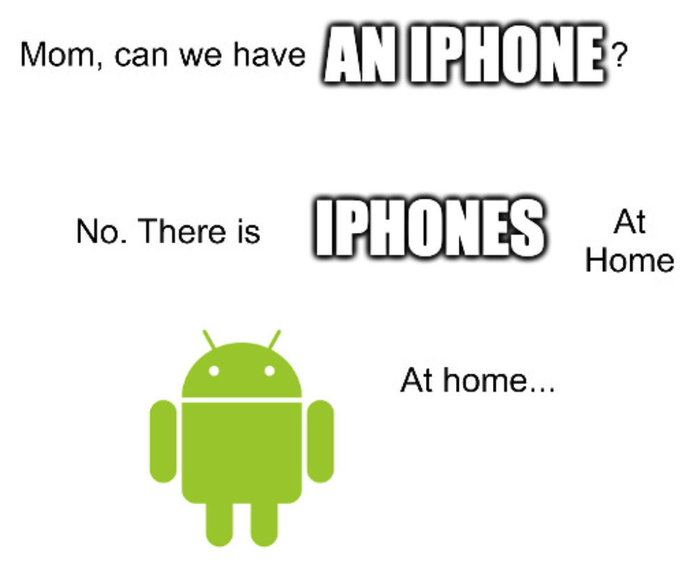

Can you tell if someone is going to mess up the group chat?
In my culture, there are certain types of people that don't use iPhones. Take that how you will, just don't get mad at me, I don't make the rules. And although there is definitely some confirmation bias going on, I don't think that's the entirety of it. I've been making predictions about which phone someone uses before I see it and I feel like I'm correct a majority of the time (again, confirmation bias absolutely plays a role here, but how much is up for debate and what I'm trying to accomplish here).
This is my chance to actual record predictions. For every person that I know or meet but do not know their model of phone, I will predict the phone they use with some degree of confidence, find out which phone they use, then mark it down as a success or failure. (Side note: I only started the confidence tracking halfway through, so the first half of people are confidence-less.)
A few ground rules for fair play:
The rules effectively boil down to me focusing on strangers or acquaintances whose personal history and details I know little to none of.
Data was collected from 05 April 2022 to 15 January 2024 during in-person interactions and over a dating app. I started off with just yes-no prediction and transitioned to probabilistic predictions.
See Appendix I: Data for the full dataset.
I used the Brier score to calculate my accuracy:
\[BS = \frac{1}{n} \sum_{i = 1}^{n} (p_{i} - o_{i})^2\]Some basic statistics:
These numbers mean nothing unless I compare them to the iPhone vs. non-iPhone market shares:
I did decently better than chance when predicting women's phones and only slightly better than chance when predicting men's phones.
More information that could make this dataset better:
| Name | Prediction (1 = 1 iPhone) | Actual (1 = iPhone) | Success? | Gender | Brier Score |
|---|---|---|---|---|---|
| JT | 0 | 0 | 1 | M | N/A |
| Me | 1 | 1 | 1 | F | N/A |
| Me | 1 | 1 | 1 | F | N/A |
| Ee | 1 | 1 | 1 | F | N/A |
| Ke | 1 | 1 | 1 | F | N/A |
| Pe | 1 | 1 | 1 | F | N/A |
| Ee | 1 | 1 | 1 | F | N/A |
| BW | 0 | 0 | 1 | M | N/A |
| DR | 0 | 0 | 1 | M | N/A |
| Ce | 1 | 1 | 1 | F | N/A |
| Ce | 1 | 1 | 1 | F | N/A |
| ZM | 0 | 0 | 1 | F | N/A |
| Ae | 1 | 0 | 0 | F | N/A |
| BT | 0 | 1 | 0 | F | N/A |
| Ae | 1 | 1 | 1 | F | N/A |
| Te | 1 | 1 | 1 | F | N/A |
| SF | 0 | 0 | 1 | M | N/A |
| MC | 0 | 1 | 0 | M | N/A |
| Ne | 1 | 1 | 1 | F | N/A |
| He | 1 | 0 | 0 | F | N/A |
| Ke | 1 | 1 | 1 | F | N/A |
| Ke | 1 | 1 | 1 | F | N/A |
| Me | 1 | 1 | 1 | F | N/A |
| Se | 1 | 1 | 1 | F | N/A |
| Ge | 1 | 1 | 1 | F | N/A |
| Be | 1 | 1 | 1 | F | N/A |
| Le | 1 | 1 | 1 | F | N/A |
| Ae | 1 | 1 | 1 | F | N/A |
| EC | 0 | 1 | 0 | M | N/A |
| Me | 75 | 1 | 1 | F | 0.0625 |
| Me | 90 | 1 | 1 | F | 0.01 |
| Ee | 75 | 1 | 1 | F | 0.0625 |
| Fe | 70 | 1 | 1 | F | 0.09 |
| ED | 20 | 0 | 1 | M | 0.64 |
| Na | 75 | 1 | 1 | M | 0.0625 |
| Le | 70 | 1 | 1 | F | 0.09 |
| Ae | 80 | 1 | 1 | F | 0.04 |
| Ke | 85 | 1 | 1 | F | 0.0225 |
| Pe | 70 | 1 | 1 | F | 0.09 |
| Ee | 60 | 1 | 1 | F | 0.16 |
| Be | 80 | 1 | 1 | F | 0.04 |
| Se | 80 | 1 | 1 | F | 0.04 |
| PI | 70 | 1 | 1 | M | 0.09 |
| Ee | 75 | 1 | 1 | F | 0.0625 |
| AI | 80 | 1 | 1 | M | 0.04 |
| Ee | 90 | 1 | 1 | F | 0.01 |
| Me | 85 | 1 | 1 | F | 0.0225 |
| Re | 80 | 1 | 1 | F | 0.04 |
| Se | 85 | 1 | 1 | F | 0.0225 |
| CI | 40 | 1 | 0 | M | 0.16 |
| Je | 80 | 1 | 1 | F | 0.04 |
| Je | 70 | 1 | 1 | F | 0.09 |
| Le | 90 | 1 | 1 | F | 0.01 |
| AX | 25 | 1 | 0 | F | 0.0625 |
| Se | 65 | 1 | 1 | F | 0.1225 |
| Ke | 75 | 1 | 1 | F | 0.0625 |
| Te | 95 | 0 | 0 | F | 0.9025 |
| Me | 70 | 1 | 1 | F | 0.09 |
| Ae | 65 | 1 | 1 | F | 0.1225 |